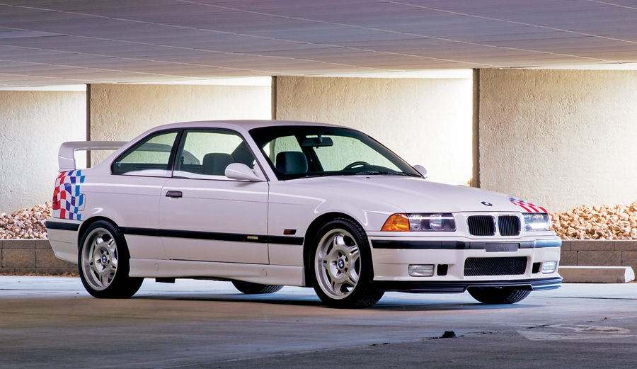
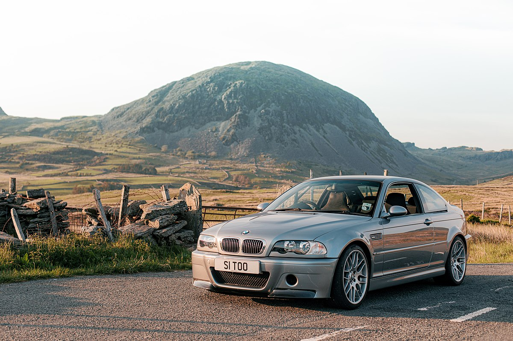
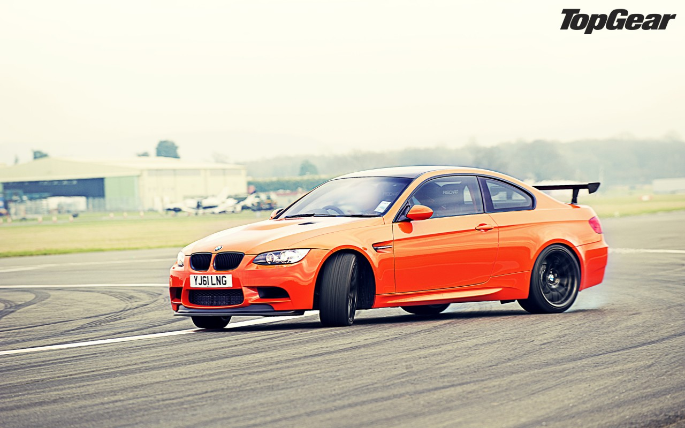
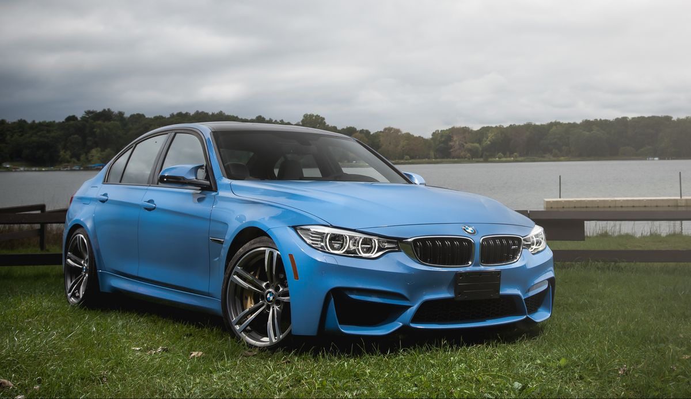
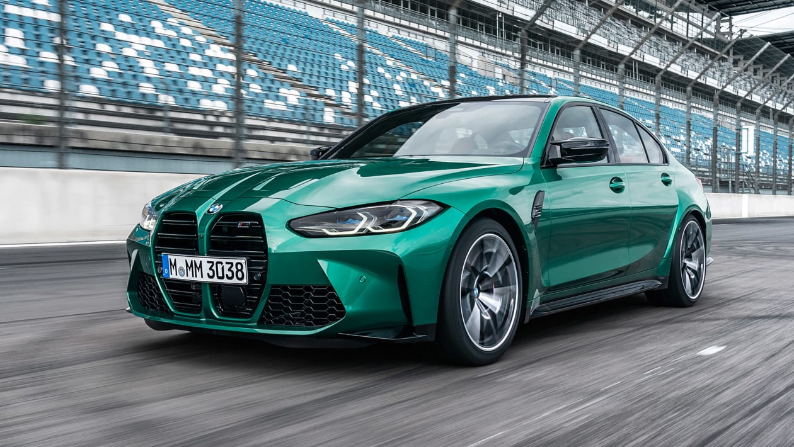

BMW M3
BMW M3 este o versiune de înaltă performanță a BMW Seria 3, dezvoltată de divizia internă de motorsport a BMW, BMW M GmbH. Modelele M3 au fost produse pentru fiecare generație a Seriei 3 de când a fost introdus E30 M3 în 1986.
Modelul inițial a fost disponibil într-un stil de caroserie coupe model, cu un stil de caroserie decapotabil adăugat la scurt timp după aceea. Sedanurile M3 au fost disponibile în timpul generațiilor E36 (1994-1999) și E90 (2008-2012). Începând cu 2014, modelele coupe și cabriolet au fost redenumite gama Seria 4, făcând varianta de înaltă performanță M4, astfel încât generația Seriei 3 a văzut M3 produs doar ca sedan. În 2020, M3 a fost produs ca un estate (Touring) pentru prima dată, alături de sedan.
Generația E30 (1986–1991)

Primul BMW M3 a fost bazat pe seria E30 3 și a fost destinat să fie o omologare specială pentru a satisface Regulile Deutsche Tourenwagen Meisterschaft și Group a Touring, care necesitau un total de 5.000 de mașini construite. A fost prezentat publicului la Salonul Auto de la Frankfurt din 1985 și a început producția din martie 1986 până în iunie 1991. E30 M3 a fost produs în principal în stilul caroseriei coupe, dar au fost produse și volume limitate de decapotabile.
Motorul
E30 M3 a folosit motorul BMW S14 cu patru cilindri, un design DOHC cu turații mari, cu o chiulasă bazată pe cea al motorului BMW S38 cu șase cilindri și blocul motorului BMW M10 cu patru cilindri cu o limită de 7.250 rpm. În țările în care M3 a fost vândut cu un convertor catalitic, versiunile inițiale au fost evaluate la 143 kW (195 CP; 192 CP) și au avut o viteză maximă de 235 km/h (146 mph). În țările în care nu a fost montat un convertor catalitic, motorul a fost evaluat la 147 kW (200 CP; 197 CP).
Transmisia era una manuală Getrag 265 cu 5 trepte. Modelele europene au fost echipate cu o versiune dogleg cu raporturi apropiate și un raport 1:1 pentru treapta a cincea. Modelele nord-americane au folosit un model tradițional de schimbare și au avut un spațiu mai mare între trepte cu o treaptă a cincea supraîncărcată. Un diferențial cu alunecare limitată de tip ambreiaj era echipament standard.
Suspensia
Diferențe față de modelele standard E30 incluse: - Butuci de roți cu 5 știfturi - bucșe ale brațului de control cu offset în suspensia din față, pentru un unghi crescut al roții - brațe de control din aluminiu - tuburi de strut față revizuite cu șurub pe kingpins și swaybar montat pe tub de strut, similar cu seria E28 5 - rulmenții roților din față și distanța dintre șuruburile etrierului de frână din seria 5 E28 - discuri spate cu fante de 310 mm și 295 mm - 6 etriere față cu piston și 4 etriere spate cu piston - furtunuri de frână împletite din oțel inoxidabil
Generația E36 (1992–1999)
Modelul M3 al seriei E36 3 a fost lansat în noiembrie 1992 și a fost inițial disponibil doar ca coupe, cu o versiune decapotabilă adăugată în 1994. O versiune sedan a fost adăugată și în decembrie 1994, pentru a umple golul cauzat de lipsa modelului sedan M5 între sfârșitul producției E34 M5 în 1995 și lansarea modelului E39 M5 în 1998.
În septembrie 1995, a fost introdusă o versiune facelift a modelului coupe. Modificările au inclus mărirea capacității motorului crescând la 3,2 L (195 cu in), transmisia manuală trecând de la 5 trepte la 6 trepte, roți diferite și faruri semnalizare transparente. Modificările de facelift au fost aplicate modelului sedan în noiembrie 1995 și modelului decapotabil în februarie 1996. Greutatea modelului coupe 1996 M3 în specificațiile europene este de 1.515 kg (3.340 lb).
Motorul
E36 M3 este propulsat de motorul BMW S50 cu șase cilindri în linie. A fost primul M3 care a folosit un motor cu șase cilindri, care a fost utilizat de atunci în majoritatea modelelor M3 (deși în formă turbo din 2014).
În majoritatea țărilor, versiunea inițială de 2.990 CMC (182 cu in) a generat 210 kW (286 CP) la 7.000 rpm și 320 NM (236 lbf ft) la 3.600 rpm. Modelele nord-americane (cu excepția modelului Canadian "M3 Euro-Spec" în ediție limitată) au folosit în schimb motorul BMW S50B30US mai puțin puternic.
Modelele facelift de la sfârșitul anului 1995 au fost modernizate cu o versiune de 3.201 CMC (195 cu in) a motorului BMW S50, generând 236 kW (316 CP) la 7.400 rpm și 350 n m (258 lbf ft) la 3.250 rpm. Modelele nord-americane au folosit în schimb motorul BMW S52 mai puțin puternic.
Generația E46 (2000–2006)
Versiunea M3 a seriei E46 3 a fost produsă în modele de caroserie coupe și decapotabilă. E46 M3 este propulsat de motorul S54 cu șase cilindri în linie și are un timp de accelerare de 0-100 km/h (62 mph) de 5,1 secunde pentru coupe standard, cu transmisie manuală sau SMG-II. Rezultatele în viraje ale skidpad-ului sunt de 0,89 g pentru coupe și de 0,81 g pentru decapotabil. Viteza maximă este limitată electronic la 250 km/h (155 mph). Greutatea este de 1.570 kg (3.461 lb).
Transmisiile disponibile erau o transmisie manuală Getrag 420G u 6 trepte sau o transmisie manuală automată SMG-II cu 6 trepte, care se baza pe Getrag 420g. SMG-II folosea un ambreiaj acționat electrohidraulic, iar schimbările de viteze puteau fi selectate prin intermediul manetei schimbătorului de viteze sau a padelelor montate pe volan. SMG-II a fost lăudat pentru timpul său rapid de schimbare și performanța pistei de curse, dar unii oameni au constatat că schimburile sale sunt întârziate și se încurcă în traficul stop-start.
Un prototip de break M3 Touring a fost construit pentru a evalua fezabilitatea construirii unui model M3 pe platforma existentă a break-ului E46 (în special integrarea arcurilor mai largi ale roților din spate ale M3 pe caroseria wagonului). Prototipul nu a ajuns în producție.
Motorul
Motorul de 3,2 L (200 cu in) S54 este evoluția finală a motorului BMW S50 aspirat natural cu șase cilindri în linie. S54 are o putere nominală de 252 kW (343 CP; 338 CP) la 7.900 rpm, 365 n CP M (269 lb CP) la 4.900 rpm și are o linie limită de 8.000 rpm. Ca și în cazul majorității motoarelor M, S54 are clapete de accelerație individuale pentru fiecare cilindru, funcționarea electronică a clapetei de accelerație (drive-by-wire) fiind o caracteristică nouă pentru S54.
Generația E90/E92/E93 (2007–2013)
M3 Modelul E90/E92/E93 este alimentat de motorul BMW S65 V8 și a fost produs în sedan, cabrio și coupe ca modele de caroserie. E9X este primul și singurul M3 de producție standard alimentat de un motor V8, deoarece succesorul său ar reveni la utilizarea unui motor cu 6 cilindri în linie. În standardul m3, motorul S65 are o putere nominală de 309 kW (420 CP; 414 CP) la 8.300 rpm și 400 n CP M (295 lb CP) la 3.900 rpm.
Inițial, M3 a fost produs cu o transmisie manuală cu 6 trepte. În aprilie 2008, E90/E92/E93 M3 a devenit primul BMW disponibil cu transmisie cu dublu ambreiaj, când transmisia Getrag "M-DCT" cu 7 trepte a fost introdusă ca opțiune.
Versiunile E90 și E92 au primit multe recenzii pozitive, inclusiv "cea mai bună mașină de pe piață, punct" și "cea mai bună și mai completă mașină din lume".
Primul stil de caroserie care a fost introdus a fost coupe, care a fost previzualizat la Salonul Auto de la Geneva din 2007 și introdus în formă de producție la Salonul Auto de la Frankfurt din 2007 pe 12 septembrie. Versiunea coupe utilizează un acoperiș din fibră de carbon pentru a reduce greutatea și a reduce centrul de greutate. În 2010, versiunile coupe BMW și cabriolet au primit un facelift minor, care a inclus faruri cu LED revizuite și piese minore de finisare interioară, dar nu a primit farurile actualizate din seria obișnuită.
Versiunea decapotabilă E93 a fost introdusă la scurt timp după coupe și utilizează un hardtop retractabil. Scaunele din piele din versiunea decapotabilă sunt tratate cu un strat de acoperire pentru a reflecta lumina soarelui, pentru a reduce tendința lor de a deveni inconfortabil de fierbinte cu hardtop-ul jos.
GTS utilizează un motor mărit la 4,4 L (269 cu in), care are o putere de ieșire de 331 kW (444 CP). Singura opțiune de transmisie a fost transmisia cu dublu ambreiaj cu 7 trepte (M-DCT) și timpul oficial de accelerare de 0-100 km/h (0-62 mph) pentru GTS este de 4,4 secunde.
Generația F80 (2014–2019)
Versiunea M3 a seriei 3 F30 a fost desemnată F80 și a fost produsă din 2014 până în 2018. F80 M3 a fost propulsat de motorul BMW S55 cu două turbocompresoare cu șase cilindri, fiind astfel primul model M3 cu turbocompresor. În ciuda cilindreei mai mici decât a motorului V8 utilizat de generația anterioară de M3, trecerea de la motoarele aspirate natural la turbocompresor a dus la creșterea puterii de vârf de la 309 la 317 kW (420 la 431 CP; 414 la 425 CP), iar cuplul de vârf a fost crescut de la 400 la 550 n m (295 la 406 lb ft).
Timpul oficial de accelerare de 097 km/h (060 mph) este de 3,9 secunde cu transmisia M-DCT și 4,1 secunde cu transmisia manuală. Viteza maximă este limitată la 250 km/h (155 mph), dar un pachet opțional M Driver ridică acest lucru la 280 km/h (174 mph). Greutatea este de 1.621 kg (3.574 lb).
În 2016, un pachet competition a devenit disponibil pentru M3 și M4. Modificările au inclus o creștere a puterii la 331 kW (450 CP; 444 CP), reglarea revizuită a diferențialului electronic și a controlului electronic al stabilității ("DSC"), upgrade-uri de suspensie și noi scaune față. timpul oficial de 0-100 km/h (0-62 mph) a fost de 4,0 secunde cu transmisia cu dublu ambreiaj.
Pentru a sărbători cea de-a 30-a aniversare a introducerii primului M3, BMW a produs o serie limitată de mașini 30-Jahre edition. Doar 500 au fost produse și distribuite în întreaga lume, dintre care 150 au ajuns în SUA. Toate mașinile americane au fost echipate cu vopsea albastră individuală Macao, interior albastru și negru, pachet de competiție și numeroase insigne și finisaje care indică mașinile ca ediție 30-Jahre.
Generația G80/G81 (2020–prezent)
Versiunea M a seriei 3 G20, propulsată de BMW S58 cu turbocompresor care a debutat în G01 X3 M. Tracțiunea integrală (xDrive) a fost anunțată ca fiind opțională pe noul M3, care ar reprezenta prima dată când un M3 a folosit un aspect al trenului de rulare, altul decât tracțiunea spate. O cutie de viteze manuală va fi disponibilă numai cu tracțiune spate. Va fi disponibil și ca model Touring (estate), marcând prima dată când BMW oferă un M3 Touring. BMW M3 G80 este la vânzare ca model 2021, cu prototipurile inițiale testate la Nürburgring alături de BMW M4 G82. A fost dezvăluit oficial pe 23 septembrie 2020 alături de noul M4.
În iulie 2022, pentru modelul 2023, berlina M3 a primit noul ecran dublu curbat cu iDrive 8, care se potrivește cu seria 3 facelift. Înlocuiește bordul digital separat anterior și sistemul de infotainment cu iDrive 7. M3 Touring a fost lansat direct cu noul ecran.
Piesele M Performance pot fi montate pe toate modelele. Acestea includ un spoiler, praguri laterale din fibră de carbon, un sistem de evacuare M Performance, canarde, un splitter din fibră de carbon, un difuzor din fibră de carbon și efecte de sol din spate.